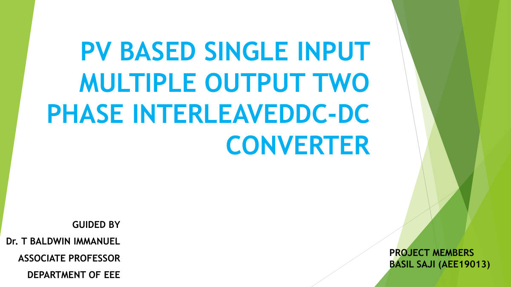
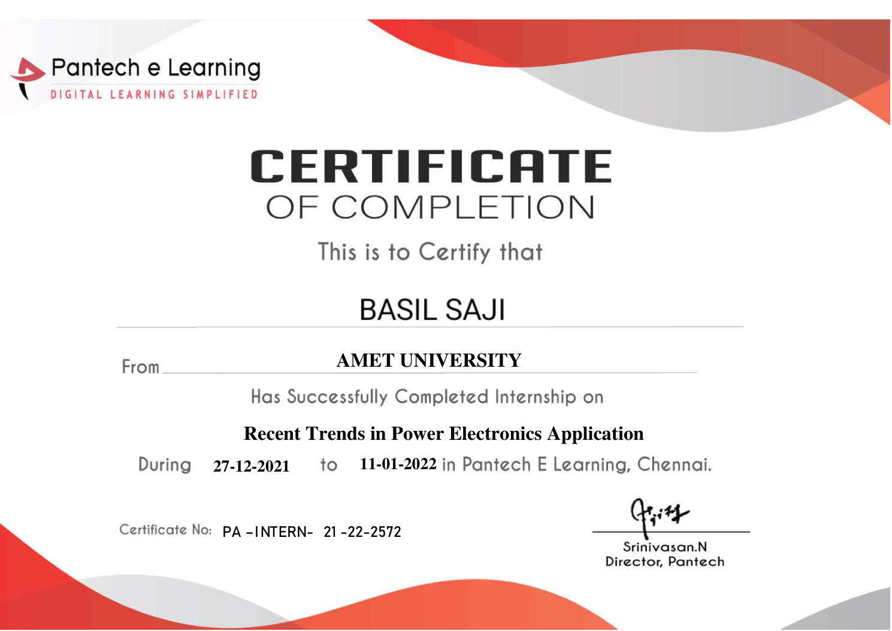
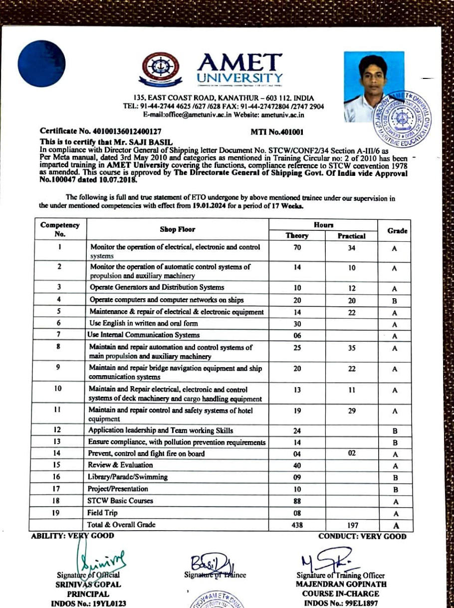

07
Reports & certificates
Every document has its own page that you can read online or download.

34 slidesProject report
PV-based SIMO Two-Phase Interleaved DC-DC Converter
Final-year B.E. project: design, simulation and hardware.
OPEN →
 16 pages
16 pagesInternship report
Recent Trends in Power Electronics Applications
Pantech e Learning, Chennai · Dec 2021 – Jan 2022
OPEN →

1 pageCertificate
Internship Completion Certificate
Pantech e Learning · PA-INTERN-21-22-2572
OPEN →

1 pageTraining record
ETO Shop-Floor Training Record
AMET University · 17 weeks · Grade A
OPEN →
 1 page
1 pageDegree
B.E. Electrical & Electronics Engineering (Marine)
AMET University · First Class · 2023
OPEN →